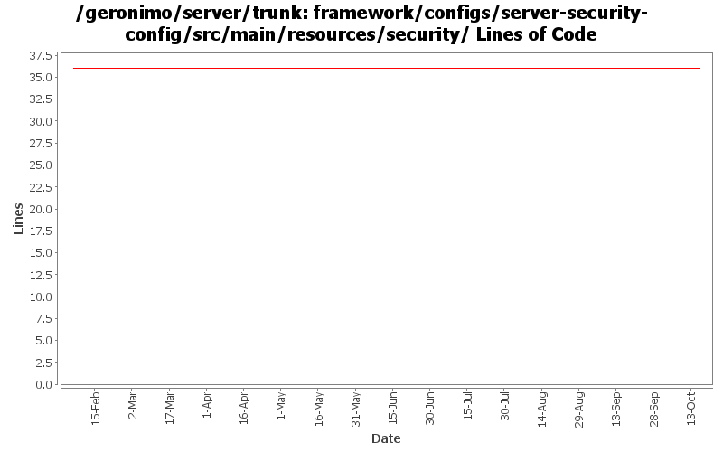

[root]/framework/configs/server-security-config/src/main/resources/security
 keystores
(1 files, 0 lines)
keystores
(1 files, 0 lines)

| Author | Changes | Lines of Code | Lines per Change |
|---|---|---|---|
| Totals | 10 (100.0%) | 36 (100.0%) | 3.6 |
| djencks | 6 (60.0%) | 36 (100.0%) | 6.0 |
| genspring | 4 (40.0%) | 0 (0.0%) | 0.0 |
GERONIMO-4916 step 2 move sandbox osgi framework into trunk
36 lines of code changed in 2 files:
GERONIMO-4916 step 1 remove old framwork
0 lines of code changed in 3 files:
GERONIMO-4823 role-based administration capabilities
0 lines of code changed in 4 files:
GERONIMO-4531, GERONIMO-4523 Simplify builder collections. Make security principal-role mappings independent of the application
0 lines of code changed in 1 file: